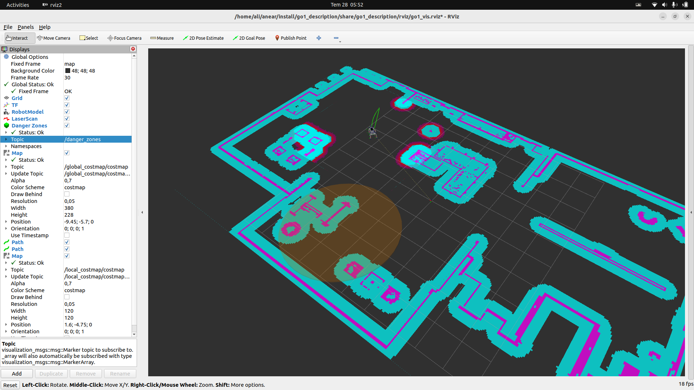
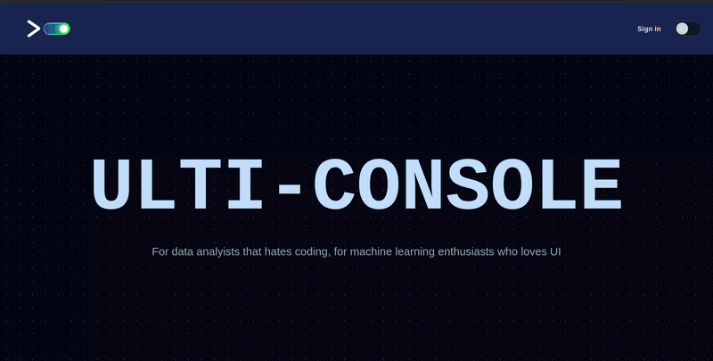
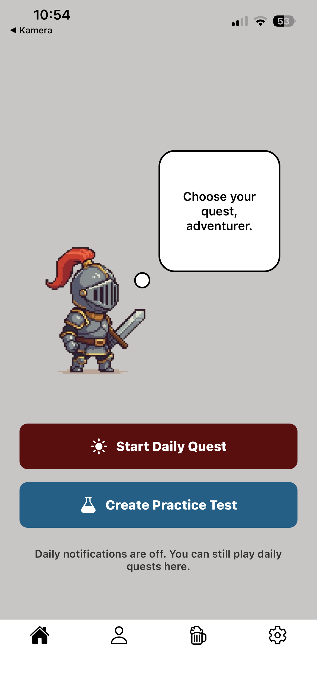
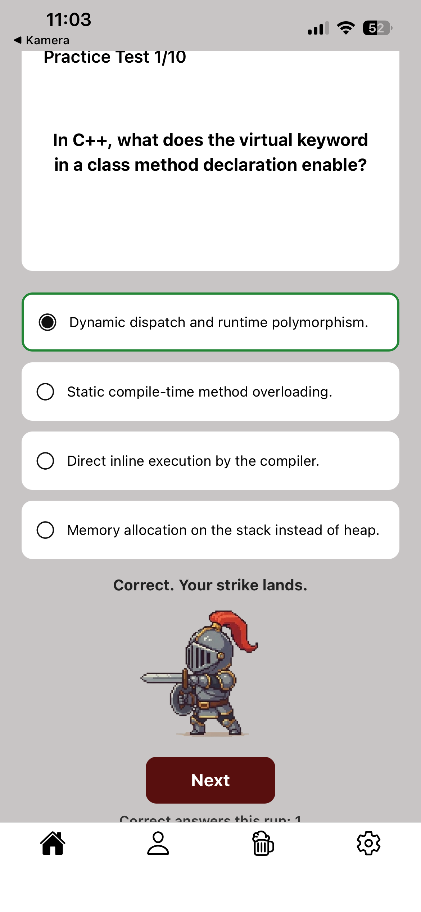

About
WHO AM I
I am a Computer Science student driven by one thing above all else: curiosity. I'm fascinated by understanding how systems work, whether it's artificial intelligence, robotics, backend engineering, or the infrastructure that keeps everything running.
That curiosity has led me to build projects across different fields—not because I couldn't choose one, but because every project was an opportunity to learn something new.
While building them, I always try to go beyond simply making things work. I want to understand why they work, digging into the details without losing sight of the deadline.
What keeps me moving is difficult to explain. I don't like standing still. Once I finish one project, I immediately start thinking about the next one.
There is always another technology to understand, another system to build, another person who is better, another challenge to take on, another opportunity. It isn't something I force myself to do—it's simply how I'm wired.
I feel a constant drive to improve, to create, and to see how far I can push myself.



